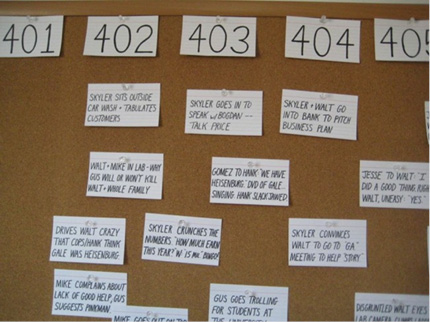

Breaking Bad wurde serientypisch in Staffeln aufgeteilt produziert. Durch die schnelle Produktionsweise des Fernsehens entstand eine Episode (exklusive Konzeption und Drehbuch) innerhalb von sechs bis acht Wochen31. Sobald die intensive Postproduktionsphase begann, wurden die Folgen im Wochenrhythmus bearbeitet. Im Folgenden wird der komplette Entstehungsprozess einer Episode mit einer Fokussierung auf tonrelevante Arbeitsschritte dargelegt.
Konzeptionierung
Vince Gilligan und sein festes Team von sechs Drehbuchautoren trafen sich regelmäßig in ihrem sogenannten Writer‘s Room in Burbank, knapp 20 Kilometer von Los Angeles entfernt. Dort haben sie jeweils mehrere Monate vor Drehbeginn einer Staffel gemeinsam die Handlung entwickelt und in einzelne Folgen, Akte und Szenen geordnet (breaking the story). Dabei wurde vom Groben ins Feine gearbeitet: Zuerst wurde die Rahmenhandlung einer Staffel festgelegt, dann die einzelnen Handlungsstränge in Folgen und Episoden verteilt, und schließlich jede Episode von Moment zu Moment durchgegangen. An jeder Episode wurden so etwa zwei Wochen gearbeitet32. Gilligan hatte stets das letzte Wort, er betont aber immer wieder, dass die Konzeptionierung eine Gruppenarbeit darstellt, bei der alle Autoren Ideen in den Raum werfen und gemeinsam entwickeln.
Im Writer‘s Room wurde also der Umriss der Handlung entworfen. Dialoge wurden in dieser Phase noch nicht besprochen33. Am Ende dieses Arbeitsschritts war die sogenannte Outline einer Folge fertig und wurde an einen der Autoren weitergereicht, um das Drehbuch dafür zu schreiben.
Drehbuch
Die meisten Drehbücher (scripts) für Breaking Bad haben eine Länge von knapp unter 50 Seiten, korrelierend mit der durchschnittlichen Episodenlaufzeit von etwa 47 Minuten. Nachd em der Drehbuchautor seinen ersten Entwurf fertig geschrieben hatte, wurde dieser von allen anderen Autoren des Teams inklusive Gilligan gelesen und erneut diskutiert. Daraufhin nahm der Autor gegebenenfalls die gewünschten Änderungen vor. Da der Showrunner auch hier die Entscheidungsmacht inne hatte, ist es letztlich seine Autorenstimme, seine Vision, die sich durch alle Drehbücher zieht.
Ab diesem Arbeitsschritt wird es in Hinblick auf die Tongestaltung interessant. Die Drehbücher sind sehr detailliert und lebendig geschrieben; sie zeugen von einem tiefen Verständnis des audiovisuellen Mediums Fernsehen. Das drückt sich dadurch aus, dass alle drei Schichten der filmischen Informationsvermittlung sowie deren Interaktion bereits latent oder manifest zum Ausdruck kommen. Barbara Flückinger definiert diese Schichten wie folgt:
[D]er narrative Kontext, der gewisse psychische Dispositionen, Urteile oder Antizipationen nahe legt; der Bildausschnitt, der die Perspektive der Kamera repräsentiert; die Aufbereitung des akustischen Umfelds.34
Es ist erstaunlich, wie klar Gilligans Vision schon lange vor Drehbeginn des Pilotfilms war. Im Drehbuch zur ersten Folge finden sich bereits viele der narrativen, visuellen und auditiven Stilmerkmale, die die Serie später ausmachen sollten. Im auditiven Bereich:
- bewusster Einsatz von Stille
- verschiedene Taktiken der Subjektivierung und Wahrnehmungsverschiebung: Ausblenden bestimmter Klangobjekte, Nachahmen körperlicher Höreindrücke wie Tinnitusgeräusche
- Offscreen-Geräusche mit signifikanter narrativer Funktion und symbolischer Aufladung (Sirenen)
- Einsatz von präexistenter, extradiegetischer Musik als Gerüst von „Cooking“-Montagen
- Tonspur überlappt am Ende des Hauptfilms, nachdem Bild schon zu schwarz schneidet
Die Drehbücher späterer Episoden führen den im Piloten etablierten Stil fort35. Die Tonspur wird häufig thematisiert, manchmal wird ein Musikstil vorgeschlagen. Besonders augenfällig ist der zum Teil comichaft-lautmalerische Sprachstil. Zusätzlich zu diesen Lautmalereien folgt häufig eine Paraphrasierung zur Verdeutlichung. Der Effekt ist, dass man beim Lesen des Texts schon eine gute Vorstellung davon bekommt, wie das filmische Endprodukt wirken könnte. Wir sehen die Bilder vor unserem inneren Auge und hören die Klänge in unserem „inneren Ohr“, zucken fast zusammen, obwohl die Schüsse oder Explosionen lediglich auf dem Papier stehen. Folglich bildet ein solches Drehbuch eine gute Arbeitsbasis für alle weiteren Beteiligten der Produktion. Außerdem wird klar: Es geht den Autoren nicht nur um das Was, sondern auch um das Wie - wie klingt etwas und welchen Effekt hat das auf uns als Zuschauer?
Suddenly -- BLAM!-BLAM!-BLAM! BULLET HOLES puncture the door, zinging just above Walt’s head. Still Walt stands fast, flinching and ducking lower. BLAM!-BLAM!-BLAM!-BLAM!36
SCRREEEEEEEEH! Tires squeal nearby. The Bulletheads turn just a moment too late and -- RRRRRRROOOOOOOOOAAR! HOLY SHIT! A vehicle SCREAMS out of nowhere, PLOUGHING into the drug dealers! A gut-turning CRUNCH of metal on flesh.37
RATTLE-RATTLE, RATTLE... locked and secure. Whew. [...] KA-BOOOM! -- something HITS the door from outside, creaking the RV and scaring the PISS out of Walt, Jesse and us. [...] BOOOOM! One more hit might do it. 38
WHOOOOOOOMPH! Gasoline CATCHES FIRE, boiling away at the fuel tank above [...] KA-BOOOOOOM!! The old truck goes up like the Fourth of July.39
We hear a button CLICK! -- the sound of a butane TORCH LIGHTER being triggered [...] PFFFFFFFFFFFFFFFF! -- a thin BLUE FLAME jets into frame.40
WEH-WEH-WEEEEEEEAAAAAHHH!! -- baby Holly stops Skyler mid-sentence with a startling, screeching CRY. And what a cry! One of those „my-child-is-possessed-by-a-demon“ shrieks of anger and injustice and hunger. Skylers head swivels toward the sound.41
DING-DONG, the doorbell rings. [...] DING-DONG, again. Followed by a hard KNOCK-KNOCK!42
CA-WEESH!..CA-WEESH!..CA-WEESH!..CA-WEESH!... CLOSE on the STROBING LIGHT of a COPY MACHINE as it zips back and forth across the copy machine glass.43
Vorproduktion
Breaking Bad wurde verhältnismäßig wenig in einer Studioumgebung (sound stage), sondern bevorzugt an realen Drehorten in und um Albuquerque aufgenommen44. Beim Location Scouting hatte die Tonabteilung kein Vetorecht; für eine visuell ansprechende Kulisse wurde auch eine tonunfreundliche Klangumgebung wie eine Autowaschanlage oder ein Schrottplatz in Kauf genommen45. Trotz aller Probleme konnten letzten Endes brauchbare Tonaufnahmen gemacht werden, wie Tonmeister Darryl Frank berichtet:
We do have our uphill battles. We‘ll run into some real crappy locations, most with no electricity. Right now, we are shooting in a pest control garage. It’s basically a mechanics garage, but it sits on one of the busiest streets in Albuquerque. Not to mention, it’s across the street from an airport and a military base. It’s funny. We’ll be in the middle of shooting and they’ll launch F-whatever off the pad and the walls will start shaking. We tried moving to night shooting, but apparently, the base likes to do drills then too. So we’ll hear a bunch of Blackhawk helicopters taking off for training. At the time, the track sounds pretty bad, but in the end, it works out.46
Auch bei der Auswahl der Materialien für Kostüme war der Klang, den diese abgeben, ein wichtiger Faktor für Frank. Ein schwieriger Fall waren z.B. die Labor-Schutzanzüge, die Walter und Jesse in der dritten und vierten Staffel oft tragen. Es musste ein Material gefunden werden, welches nicht zu heiß für die Schauspieler wurde, visuell ansprechende Reflexionen erzeugte und bei Bewegungen nicht zu stark raschelte. Franks Aufgabe war dabei oft, die Zuständigen für solche Probleme, die sonst übersehen worden wären, zu sensibilisieren 47.
Spätestens im Rahmen der Vorproduktion wurde außerdem festgelegt, wer bei der entsprechenden Episode Regie führen werde. Bei einer Fernsehsendung wechselt dies, wie Produzentin Michelle MacLaren erklärt:
Because of the way episodic television is produced, we have to have a different director for each episode. Sometimes it‘s a guest director, sometimes it‘s me, sometimes it‘s Vince Gilligan, sometimes it‘s one of our other writers, sometimes it‘s our cinematographer Michael Slovis and sometimes Bryan Cranston. 48
Dreharbeiten
Während die Autoren und Produzenten in Kalifornien weiter arbeiteten, fanden die Dreharbeiten in Albuquerque, New Mexico statt, wo sich auch der Plot der Serie abspielt. Pro Episode gab es im Normalfall acht Drehtage. Dies ist für eine 47-minütige Sendung recht wenig und führte dazu, dass Arbeitstempo und Präzision hoch sein mussten. Im Gegensatz zu einem Filmdreh gab es fast nie Nachdrehs oder zusätzliche Tage. Was nicht gedreht wurde, fiel weg. Somit mussten sowohl das Tonpersonal als auch die verwendete Technik schnell und flexibel sein.
Für die Aufzeichnung des Settons war ab der dritten Staffel Darryl Frank verantwortlicher Tonmeister (production sound mixer). Er leitete die Tonaufnahmen der Dialoge und Geräusche, stellte die benötigte Technik zusammen und führte das Tonskript. Sein Angler (boom operator), Jeff Knudsen, war für die saubere Aufzeichnung der Sprache zuständig. Steven Willer war der zweite Angler und Assistent (utility sound technician).
Gilligans Vision sah Tonaufnahmen vor, die eher auf Realismus als auf Perfektionismus ausgerichtet waren:
Our creator, Vince, really likes to keep the sound of the show as realistic as possible. You’ll see a dramatic scene in a film and it’s cut perfectly, but that’s not how people talk. On Breaking Bad, they like it when actors overlap their dialogue, step on a line or if a chair squeaks. It’s reality or as close to reality as we can for a drama.49
Zu dieser ästhetischen Entscheidung kam noch hinzu, dass Gilligan generell eher weniger Musik und Soundeffekte einsetzen wollte und kein Freund von ADR-Aufnahmen war50. Was am Set aufgenommen wurde, wurde wenn irgend möglich auch verwendet. Selbst bei extremen Totalen, bei denen man die Schauspieler nur noch als kleine Streifen auf dem Bildschirm erkennt, wurde tendenziell der aufgenommene O-Ton verwendet. Dadurch klingt die Tonspur auch tatsächlich so, als sei sie vor Ort aufgenommen worden. Viele andere Serien oder Filme hätten stattdessen eine im Tonstudio aufgenommene Dialogspur unter solche Einstellungen gelegt, die eine technisch bessere Qualität aufgewiesen hätte. Doch in der von Breaking Bad praktizierten Arbeitsweise sieht Frank den Vorteil, dass sie den Zuschauer eher in die filmische Fiktion zieht als ihre Künstlichkeit zu betonen51.
Zusätzlich zu den zwei Tonangeln wurden die Schauspieler mit kabellosen Funkmikrofonen, sogenannten Lavaliermikrofonen ausgestattet (to wire the actors) um möglichst trockene und saubere Dialogaufnahmen zu bekommen. Wenn möglich bevorzugte Frank aber die Angel, da sie von Natur aus mehr Diffusschall, Reflexionen und Beugungen einfängt52. Wann immer die Schauspieler aufgrund des Drehbuchs on-screen in ein Mikrofon sprachen, war dieses tatsächlich angeschlossen und das Signal wurde verwendet.
Tabelle 3 stellt eine Übersicht des von Frank und seinem Team verwendeten Equipments dar.
| Mikrofone | Sennheiser MKH50 (Superniere) |
|---|---|
| Sanken CS-3 (Richtrohr) | |
| Sanken COS-Il (Lavalier) | |
| Aufnahmegeräte | Sound Devices 788T (12-Spur-Rekorder) |
| Sound Devices 744T (4-Spur-Rekorder) | |
| Mischer | Sound Devices CL-9 (8-Kanal-Tonmischer) |
| Sound Devices 442 (4-Kanal-Tonmischer) | |
| Sound Devices 664 (6-Kanal-Tonmischer inkl. Rekorder) | |
| Drahtlosanlagen | Lectrosonics SMa (Sender) |
| Lectrosonics UCR41 la (Empfänger) | |
| Lectrosonics SNA600 (Faltdipolantenne) | |
| Lectrosonics ALP500 (Antenne) | |
| Sonstiges | Sound Devices CL-l (Tastatur-Interface) |
| Sound Devices CL-WiFi (iPhone-App zur Fernsteuerung) | |
| Lectosonics LectroRM (iPhone-App zur Fernsteuerung) |
Postproduktion
Editing
Pro Folge war jeweils ein Cutter (picture editor) in Zusammenarbeit mit Gilligan dafür zuständig, „aus einer Masse von visuellen und akustischen Elementen ein organisches Ganzes“53 zu schaffen. Dies war stets entweder Kelley Dixon oder Skip MacDonald, selten auch Lynne Willingham. Dieses gleichbleibende Personal ist sicher einer der Faktoren, der die Serie visuell so kohärent erscheinen lässt.
Das Editing in Breaking Bad ist innovativ und teils experimentell, jedoch nie unmotiviert, sondern stets um die Handlung und den Seelenzustand der Charaktere zu unterstützen. Außergewöhnlich sind z.B. Subjektivierungstaktiken wie schnelle, stakkatoartige Schnitte, die Material verschiedener Takes verwenden, um Hektik und Panik zu versinnbildlichen. Interessant ist auch, was alles nicht weggeschnitten wird. Die stillen, ruhigen, handlungs- und dialogarmen Strecken der Serie sind durch ein langsames Erzähltempo markiert, kontrastieren die Wirkung der schnelleren, actiongeladeneren und intensivieren deren Wirkung so noch. Im Pilotfilm ist die Handlung streckenweise rasant, treibend, schnell und die Charakterentwicklung enorm, und doch gibt es lange Szenen, in denen Walter einfach nur an seinem Pool sitzt und brennende Streichhölzer ins Wasser wirft. Ein Blogger bringt dieses Gespür für Rhythmus auf den Punkt:
Als ich die Pilotfolge 2009 zum ersten Mal sah, hatte ich zwei Gedanken. Der erste war: „Man[n], erzählen die schnell.“ Und der zweite: „Man[n], lassen die sich viel Zeit!“54
Interessanterweise korrelieren diese langsameren Momente meist mit einer eher stillen, reduzierten Tonspur und so versteht man instinktiv, was gemeint ist, wenn von den „stilleren Momenten“ die Rede ist. Diese machen für Gilligan die Essenz seiner Serie aus:
People talk about the big moments on Breaking Bad. But it could be argued that […] these very quiet moments of character, where we illuminate and understand who these characters really are and what they really believe, are the heart and soul of the show.55
Ein Markenzeichen der Serie sind die zu lizenzierter Musik geschnittenen zeitkomprimierenden Montagen, in erster Linie die „Meth-Cooking“-Montagen. Diese Tradition wurde in der Pilotfolge begonnen und war bereits im Drehbuch recht anschaulich beschrieben:
INT. WINNEBAGO - AFTERNOON - MONTAGE
Edited to the BEAT of some very hip, driving SONG, we see various ANGLES and JUMP-CUTS of Walt cooking meth, assisted by [Jesse]. Hours are compressed into seconds here.
For those of us who grew up watching “The A-Team,” this is that scene they’d always do where the A-Team builds a tank or a jet plane out of spare parts. Same feeling, same energy -- except here, our guys are making highly illegal drugs.56
Ein weiteres wiederkehrendes Element der Zeitkomprimierung sind Zeitraffer-Aufnahmen (time lapse). Mithilfe dieser wird oft das Vergehen eines oder mehrerer Tage erzählt. Das Gegenteil, gedehnte Zeitlupenaufnahmen, kommt nur selten und in kurzen, intensiven Momenten vor .
Im Gegensatz zu vielen anderen Film- und Fernsehproduktionen wurden bei Breaking Bad keine Temp-Tracks verwendet. Dieser Begriff bezeichnet Musikstücke, die für den Editingprozess temporär unter das Bild gelegt, später jedoch durch andere Stücke ersetzt werden. In Amerika durchaus üblich birgt diese Praxis doch einige Nachteile57. Oft ist diese Praxis jedoch von der Produktionsfirma oder dem Network gewünscht, damit man sich frühzeitig einen Eindruck verschaffen kann. AMC zeigte sich in dieser Hinsicht entgegenkommend, eventuell auch weil der Sender im Seriengeschäft erst Fuß fassen musste und den Kreativen daher noch mehr Freiheiten ließ. Durch das Fehlen von Temp-Tracks hatten Komponist und Music Supervisor bildlich gesprochen ein weißes Blatt vor sich und konnten ihren Ideen freien Lauf lassen.
Im Editing wird die Grundlage geschaffen, auf die Musik und Sounddesign aufbauen. Viele Tonentscheidungen werden schon in dieser Phase getroffen; ein belegtes Beispiel dafür ist das Ausblenden sämtlicher Tonelemente außer der Musik im Teaser zu 5x6 Buyout58. Andererseits gibt der Ton auch oft den Schnitt vor, wie in den bereits erwähnten Montagesequenzen. Editing und Tongestaltung stehen also in reziprokem Zusammenhang.